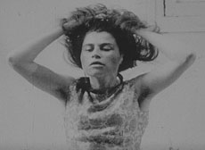

|
LETTRE À LA PRISON (Letter to the Prison)
Marc Scialom | F 1969 / 2008 | 70 min.
Material: 16mm
Format: 35mm
Original language: French
Script: Marc Scialom
Camera: Marc Scialom
Editing: Marc Scialom
Musik: Matar Mohamed
With Tahar Aïbi, Marie-Christine Lefort, Myriam Tuil, Marie-Christine Rabedon u.a.
Restauration: L'Immagine Ritrovata - Cineteca de Bologna, Film flamme, Marseille
Production: Film flamme-Le SACRE
Print/Sales: Film flamme
GNCR Special Mention, FID Marseille 2008
www.polygone-etoile.com
German premiere
In 1970, a young Tunisian comes to France for the first time, sent by his family to help his elder brother who has been wrongly accused of murder and imprisoned in Paris. He arrives by boat in Marseille where he meets Tunisians who are strangely different from those he knew in Tunisia ; he meets French people who seem enigmatic to him and finds a rather disturbing atmosphere that makes him doubt little by little all he thought he knew : his brother’s innocence, his own innocence, his own mental integrity. A cultural and personal identity is jeopardized against the backdrop of post-colonialism society.
LETTER TO THE PRISON was made on location in Tunis and Marseille in 1969. At the time, the Franco-Tunisian director, Marc Scialom did not have sufficent funding and had to stop work on the film, leaving only one copy. It offers a unique glimpse of the history of immigraiton in France: a truly artistic feature film directed by an emigrant (in exile) living between Tunisia and France. The film was discovered by Marc Scialom’s daughter, Chloe Scialom, also a film-maker, and restored at the Immagine ritrovata restoration laboratory at Bologna's Cineteca.
Marc Scialom, born in 1934 in Tunis. In the end of the 50’s he came to France. In 1957 he makes his first film,EN SILENCE. In 1966 he wins a Golden Lion with his short film EXILS. After his vain attempts to get financed the copies of his first feature film LETTRE A LA PRISON he stops film making and becomes a university teacher at the Sorbonne and the University of Saint-Etienne. He has published two novels, Loin de Bizerte und La Machine réalité.
back
|